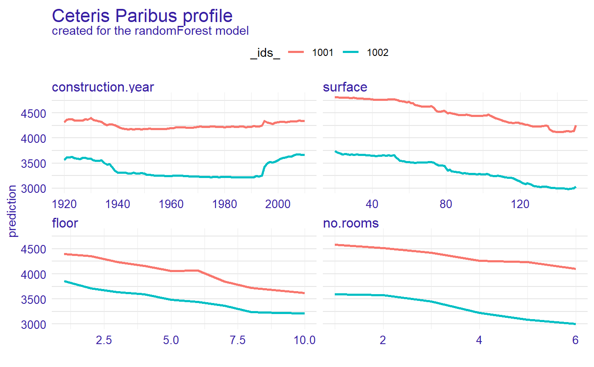
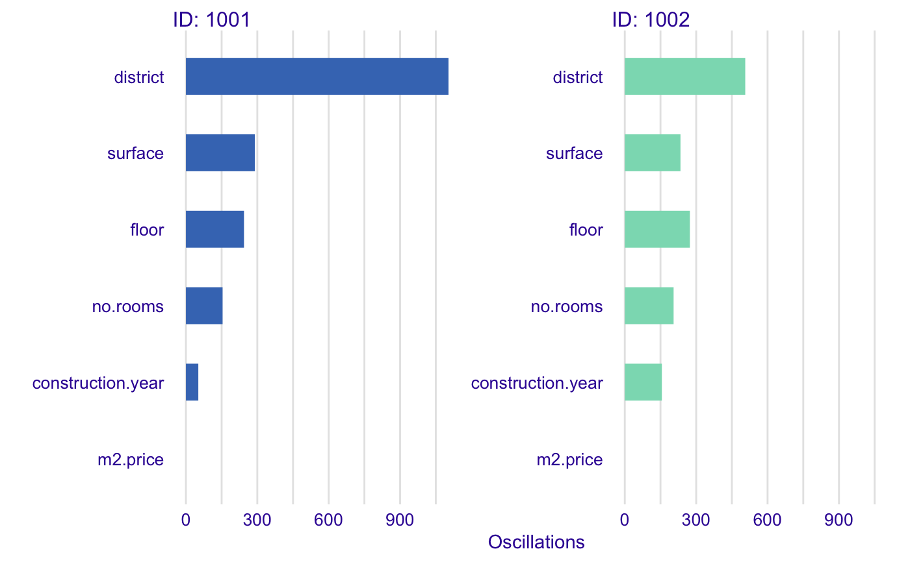

R/plot_ceteris_paribus_oscillations.R
plot.ceteris_paribus_oscillations.RdThis function plots local variable importance plots calculated as oscillations in the Ceteris Paribus Profiles.
# S3 method for ceteris_paribus_oscillations plot(x, ..., bar_width = 10)
| x | a ceteris paribus oscillation explainer produced with function |
|---|---|
| ... | other explainers that shall be plotted together |
| bar_width | width of bars. By default 10 |
a ggplot2 object
Predictive Models: Visual Exploration, Explanation and Debugging https://pbiecek.github.io/PM_VEE
library("DALEX") # \donttest{ library("randomForest") apartments_rf_model <- randomForest(m2.price ~., data = apartments) explainer_rf <- explain(apartments_rf_model, data = apartments_test[,-1], y = apartments_test[,1])#> Preparation of a new explainer is initiated #> -> model label : randomForest ( default ) #> -> data : 9000 rows 5 cols #> -> target variable : 9000 values #> -> predict function : yhat.randomForest will be used ( default ) #> -> predicted values : numerical, min = 1970.18 , mean = 3508.055 , max = 5757.902 #> -> residual function : difference between y and yhat ( default ) #> -> residuals : numerical, min = -769.8233 , mean = 3.468059 , max = 1325.549 #> -> model_info : package randomForest , ver. 4.6.14 , task regression ( default ) #> A new explainer has been created!apartment <- apartments_test[1:2,] cp_rf <- ceteris_paribus(explainer_rf, apartment) plot(cp_rf, color = "_ids_")#> _vname_ _ids_ oscillations #> 9 district 1001 1175.60868 #> 10 district 1002 525.56531 #> 3 surface 1001 292.92661 #> 5 floor 1001 276.22456 #> 6 floor 1002 257.15398 #> 4 surface 1002 234.87759 #> 8 no.rooms 1002 217.91530 #> 7 no.rooms 1001 164.63709 #> 2 construction.year 1002 152.83025 #> 1 construction.year 1001 53.33294plot(vips)# }